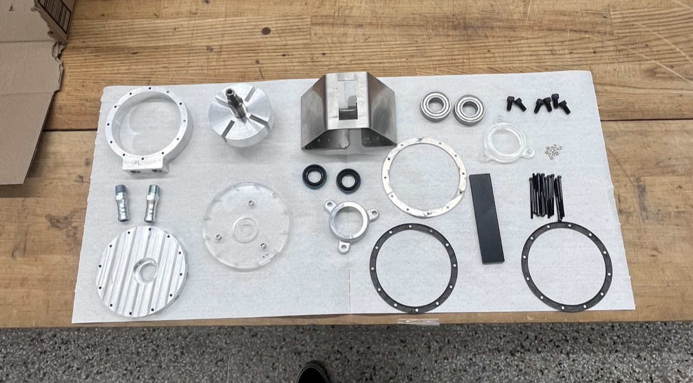

CNC Milling • Sand Casting • Laser Cutter • Water Jetter • Lathe • Sheet Metal Bending
This project focused on machining and assembling a fully functional rotary vane pump from scratch. Every component was manufactured individually, which meant working through each step of the process from raw material to final assembly. The project required careful planning, precise machining, and plenty of iteration to get everything working smoothly.
The pump components were produced using a variety of manufacturing processes, including:
Working hands-on with each of these processes helped build a practical understanding of their real-world limitations, such as achievable tolerances, surface finish quality, setup time, and ease of assembly. Many of the parts were intentionally designed with poor manufacturability, which required adapting machining strategies and making design compromises. Overall, the project highlighted the importance of designing components with both manufacturing and assembly in mind.
The first phase of the project centered on machining the individual pump components. This involved a combination of manual and CNC operations, with a strong emphasis on dimensional accuracy and repeatability. Throughout the process, tolerances, fit types, and surface finishes were carefully monitored using calipers, micrometers, and dial indicators. Ensuring each part met its specifications was critical to achieving proper fit and function during assembly.
Once assembly began, several issues became apparent, including a slightly oversized rotor, burrs in the vane slots, and a small misalignment in the bearing housing. Resolving these problems required repeated disassembly, minor re-machining, and careful fitting adjustments. This stage of the project emphasized the importance of patience, attention to detail, and a methodical approach when turning individual parts into a reliable, working mechanical system.